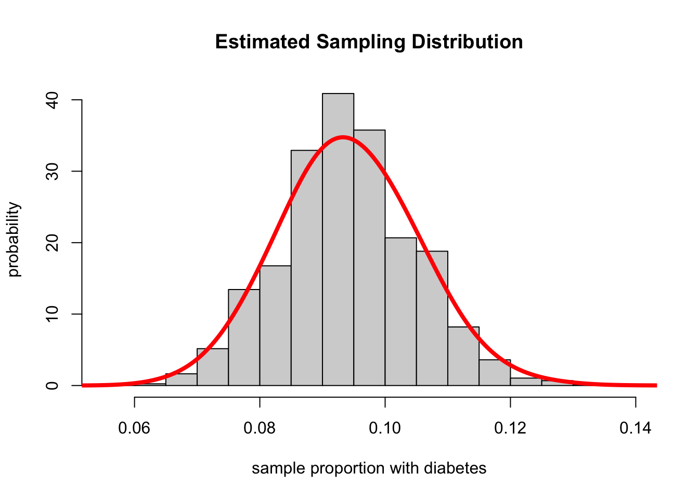

Recall that
\[ E\left(\frac{Y}{n}\right)=\pi \]
\[ p=\frac{y}{n} \]
where \(y\) is the observed number of successes in the \(n\) trials.
It is known that the proportion of adults in the US who have diabetes is 0.094 or 9.4%. If we take a random sample of 750 of US adults and determine the number who have diabetes, \(Y\), then \(Y\) has a binomial distribution with \(n\)=750 and \(\pi\)=0.094. Suppose we did not know the value of \(\pi\), we would estimate it with the observed number of individuals out of the 750 who have diabetes, \(y\) divided by 750; the estimate would be \(p\) = \(y\) / 750.
1> Let’s simulate this experiment by using the R
function rbinom() to get a sample size 750
from the population
(y <- rbinom(1, 750, 0.094))## [1] 682> Based on the sample above, the estimate of \(\pi\) would be \(p\) = 80 / 750 = 0.107. What happens if we take another sample from the population of size 750?
(y1 <- rbinom(1, 750, 0.094))## [1] 73Perform a simulation where we get 5000 samples of size 750 each and for each sample, we compute the value of \(p\).
rbinom() and store the 5000
simulated estimates of \(p\) in a
vector called props. We then will take a look at the first
125 values in the vector.props <- rbinom(5000, 750, 0.094) / 750
round(props[1:125], 3)## [1] 0.108 0.116 0.079 0.092 0.068 0.093 0.079 0.084 0.085 0.077 0.093 0.088
## [13] 0.089 0.097 0.064 0.099 0.093 0.084 0.093 0.085 0.093 0.065 0.100 0.081
## [25] 0.081 0.065 0.103 0.117 0.101 0.087 0.072 0.097 0.100 0.099 0.089 0.076
## [37] 0.097 0.097 0.084 0.107 0.087 0.099 0.117 0.089 0.081 0.104 0.091 0.091
## [49] 0.083 0.096 0.096 0.097 0.111 0.100 0.105 0.091 0.107 0.093 0.105 0.104
## [61] 0.100 0.105 0.108 0.091 0.091 0.091 0.083 0.119 0.120 0.101 0.101 0.101
## [73] 0.103 0.088 0.093 0.089 0.088 0.100 0.093 0.115 0.097 0.085 0.091 0.091
## [85] 0.084 0.081 0.104 0.089 0.100 0.107 0.079 0.100 0.095 0.099 0.089 0.112
## [97] 0.113 0.100 0.096 0.104 0.097 0.084 0.092 0.095 0.089 0.095 0.085 0.083
## [109] 0.093 0.101 0.091 0.104 0.079 0.105 0.085 0.097 0.108 0.079 0.083 0.113
## [121] 0.087 0.085 0.085 0.096 0.101hist(props,
xlab = "sample proportion with diabetes",
ylab = "probability",
freq = FALSE,
main = "Estimated Sampling Distribution")
lines(density(props,adjust=2.5),col="red",lwd=4)
sum((props >= 0.084 & props <= 0.104)) / 5000## [1] 0.6844It would be quite likely to get estimates in this range. This can also be seen from the sampling distribution for the estimated proportion.
the interval is (0.094-0.02, 0.094+0.02) = (0.074, 0.114)
(answer <- sum((props < 0.074 | props > 0.114 )) / 5000)## [1] 0.061Hence we can see that with a sample of 750, we are unlikely to get a estimate that is more than 0.061 from the real proportion.
The estimator of the probability of success for the binomial distribution is itself a random variable.
The number of observed successes in the sample, \(y\), is described by the random variable \(Y\), which is binomial.
So our estimator is the random variable, Y/n, we can compute its expected value.
\[ E(p)=E\left(\frac{Y}{n}\right)=\frac{E(Y)}{n}=\frac{n \pi}{n}=\pi \]
So the expected value of the estimator is in this case equal to the true parameter value.
The expected value of this estimator does NOT depend on the sample size \(n\) upon which the estimate is based.
We want estimators that have the mean as close as possible to the true value and smallest variance.
The probability function (PMF or PDF) of a statistic is called the
sampling distribution of the statistic.
If a random variable \(Y\) is binomial
has population mean \(\pi\) and population variance \(\frac{\pi(1-\pi)}{n}\).
Standard error: the standard deviation of the sampling distribution.
Looking at the sampling distribution of the sample proportion, \(p\), its shape is similar to a binomial distribution.
If the binomial distribution of \(Y\) with parameters \(\pi\) and \(n\) can only take the values of \(y\) = 0, 1, 2, . . . , \(n\), then the distribution of the sample proportion can only take on the values \(p\) = 0/\(n\)(= 0), 1/\(n\), 2/\(n\), . . . , \(n\)/\(n\)(= 1).
The probabilities map one-to-one with the probability
\[ \begin{array}{c}\operatorname{Pr}(Y=0)=\operatorname{Pr}(p=0) \\ \operatorname{Pr}(Y=1)=\operatorname{Pr}(p=1 / n) \\ \operatorname{Pr}(Y=2)=\operatorname{Pr}(p=2 / n) \\ \operatorname{Pr}(Y=3)=\operatorname{Pr}(p=3 / n) \\ \ldots \\ \operatorname{Pr}(Y=n)=\operatorname{Pr}(p=1)\end{array} \]
If \(Y\) has a binomial distribution with a probability of success of \(\pi\), then the sample proportion \(p\), based on a random sample of \(n\) observations (or trials), has a binomial distribution with men \(\pi\) and variance \(\pi(1-\pi)\) /\(n\).
In order to compute these values, we need to usebinom()with \(Y\) and \(n\) to get the probabilities.
First, we need to determine the \(y\) values that corresponds to 0.084 and 0.104, respectively. \(\operatorname{Pr}(63 \leq Y \leq 78)\)
(answer2 <- round(pbinom(78, 750, 0.094) - pbinom(62, 750, 0.094), 3))## [1] 0.683Second, compare 0.683 to the below:
sum((props >= 0.084 & props <= 0.104)) / 5000## [1] 0.6844
- The interval is (0.094-0.02, 0.094+0.02) = (0.074, 0.114)
- Pr(\(p\)<0.074) + Pr(\(p\)>0.114) To translate to the values for Y, we multiply the \(p\) by 750. This results in \(y=750\times0.074=55.5\) and \(y=750\times0.114=85.5\). Thus, we want to use a binomial distribution to compute \(Pr(Y<55.5)=Pr(Y\le 55)\) and compute \(Pr(Y>85.5)=Pr(Y\ge86)\). Recall that to compute \(Pr(Y\ge86)\) the relationship \(Pr(Y\ge86)=1-Pr(Y\le85)\).
(answer3 <- round(pbinom(55,750,0.094) + (1 - pbinom(85,750,0.094)), 3))## [1] 0.06Compare 0.06 to the below:
(answer4 <- sum((props < 0.074 | props > 0.114 )) / 5000)## [1] 0.061The values from the simulated sampling distribution for \(p\) yields values close to the values from the exact sampling distribution.